This week: seq2seq.
I-Various sequence to sequence architectures
Basic Models
e.g. Machine translation
encoder network: many-to-one RNN
decoder network: one-to-many RNN
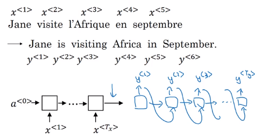
This architecture also works for image captioning: use ConvNet as encoder
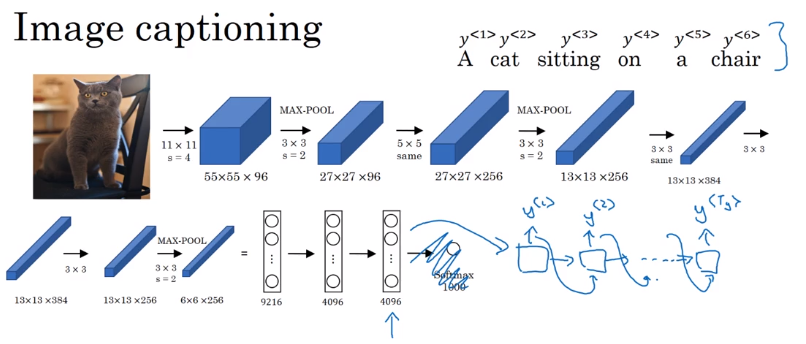
Difference between seq2seq and generating new text with language model: seq2seq don't randomly choose a translation, but choose most likely output sequence.
Picking the most likely sentence
Machine translation (or seq2seq in general): a conditional language model.
- language model:
P(y<1>,...,y<T>),x<i> = y<i-1>, initial activation =a<0> - seq2seq: feed encoder output as initial activation →
P(y<1>...y<T>|x=input seq)
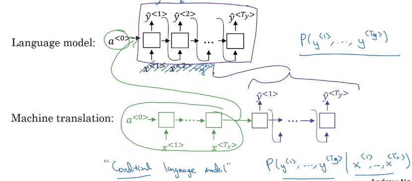
Want to sample most likely output sequence (instead of random sampling)
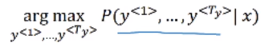
- For output sequence of length L, there are |V|^L possiblilities.
- greedy search: pick most likely word at each step → doesn't work well
- → approximate(not guaranteed) search algo: beam search (next section).
Beam Search
Approximately find most likely output sequence.
algo
parameter: beam width B = 3 (beam serach = greedy for B=1)
- step 1: find
Bmost likely choices for first word argmaxP(y<1>|x) - step 2: for each of
Bprevious choices → compute second word probabilities
→ compuate P(y<1>, y<2>|x) by Bayes
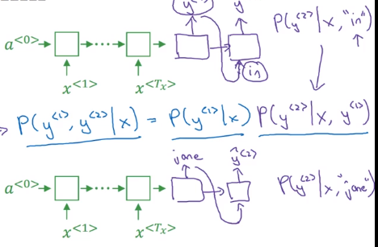
initialize B copies of the network, hardwiring each of the B choices of first word from last step
⇒ keep top B most likely first 2 words {y<1>,y<2>}
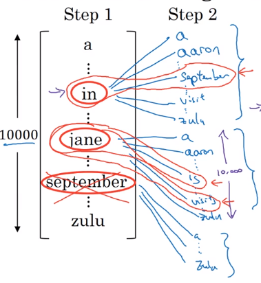
- step 3: similar
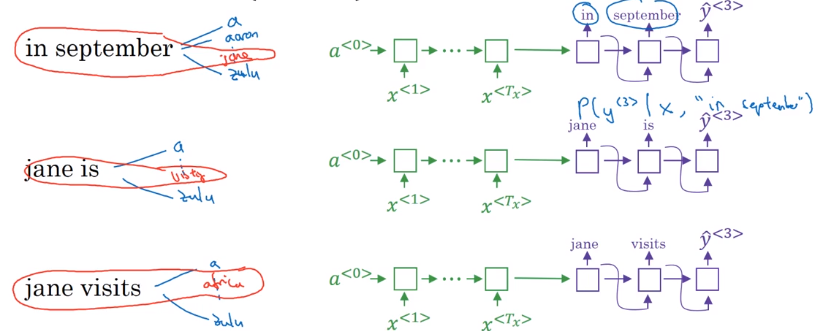
Refinements to Beam Search
Length normalization
original object to optimize:
P(y<1>...y
(in practice: taking log → sum of log-probas, more numerically stable)
with original object function, tends to prefer shorter output sequences
⇒ normalize the probability by output length, i.e. average proba of each word
"normlized log-likelihood"
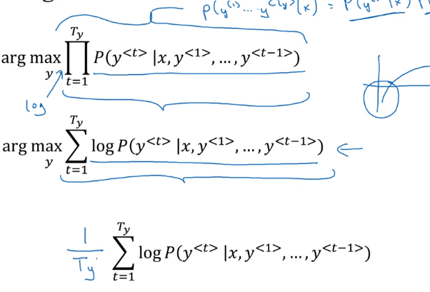
In practice: use a softer normalization: normalize by T^alpha (typical value: alpha=0.7)
- alpha=1: fully normalizing by length
- alpha=0: no normalization
Beam width choice
- large B: better approximation, better result, slower
- small B: worse result, but faster
In production: B=10
In research: B=~1000
Error analysis in beam search
When error occurs: figure out whether it's due to beam search or RNN model.
Given yhat and y*(human result):
→ feed yhat and y* to RNN language model, compute the probability of each sequence
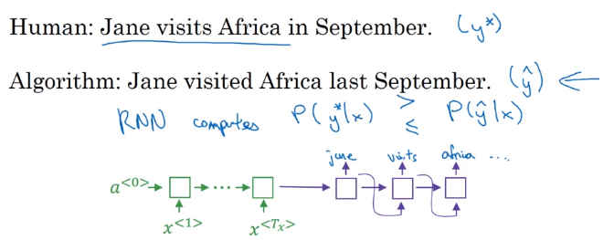
- If
P(y*)>P(yhat)⇒ beam seach needs improvement - If
P(y*)<P(yhat)⇒ RNN needs improvement
Bleu Score (optional)
How to evaluate machine translation systems (multiple correct answers).
→ BLEU (bilingual evaluation understudy): pretty good single-number eval metrics.
Precision
- (word-level) Precision: fraction of words in MT output that appears in reference translation
- Modified precision: each word has a credit: max number of appearance in reference sentences (i.e. clip the count of a word)
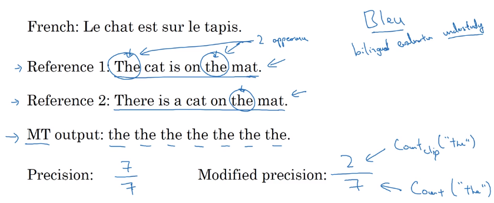
Precision on bigrams
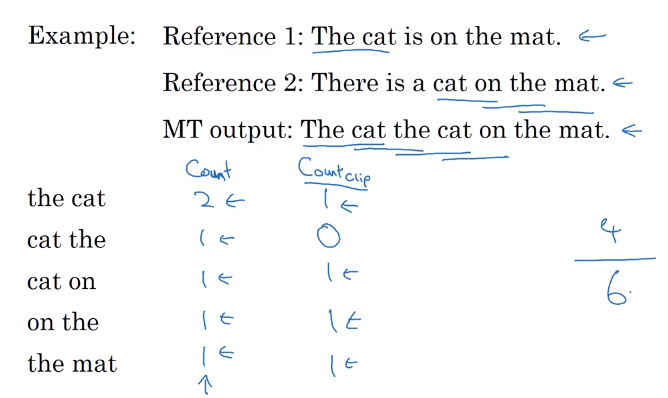
For n-grams:
Pn = sum(count_clip of ngram in yhat) / sum(count of ngram in yhat)
Bleu score
Combined Bleu score: exp of avearged precision.
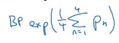
BP: brevety penalty (penalize short translations)
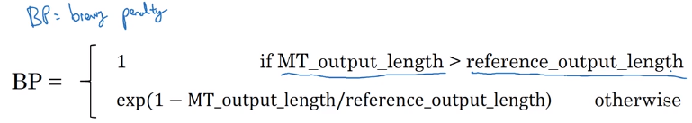
Attention Model Intuition
Human translator: generate translation one part after another, instead of memorize (encode) whole sentence before translate.
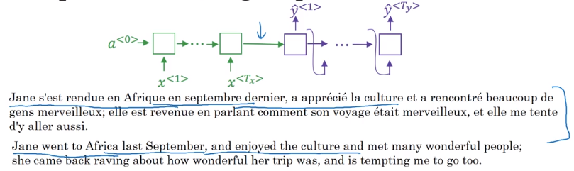
- Input: run B-RNN to get hidden features for each word
a<t> - Output: also an RNN,
at each step, using context with attention weights alpha to focus on only parts of input features.
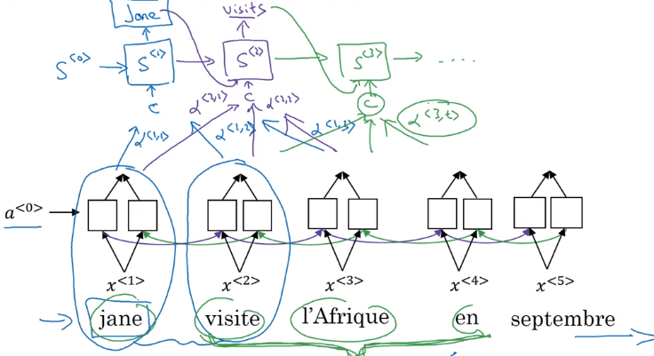
Attention alpha<t,t'>: how much attention to pay to t'th input word when generating tth output word: depends on previous output s<t-1>, and RNN input feature a<t'>.
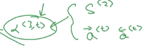
Attention Model
Recap of attention model:
Feature vector at t'th input word: a<t'>
context: input features, weighted by attention weights
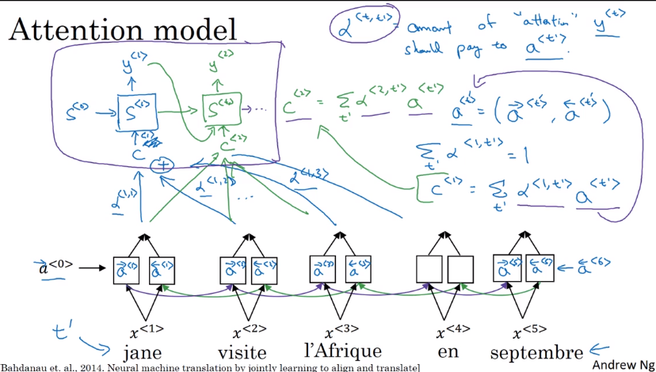
Computing attention alpha
Use a<t,t'>=softmax(e<t,t'>) to ensure attention is normalized (over all t's) to one.
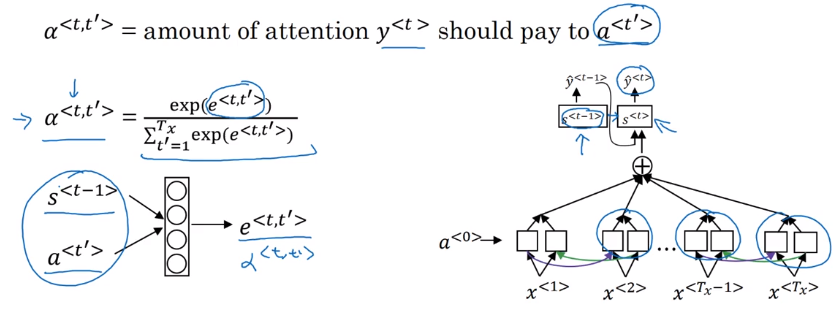
⇒ The mapping function from a<t'> and s<t-1> to attention logits e<t,t'> is unknown
→ plug in a NN: e<t,t'> = W * (s<t-1>, a<t'>)— and trust backprop !
downside: quadratique time complexity (Tx * Ty) → acceptable in MT, since input/output seqs are not that long...
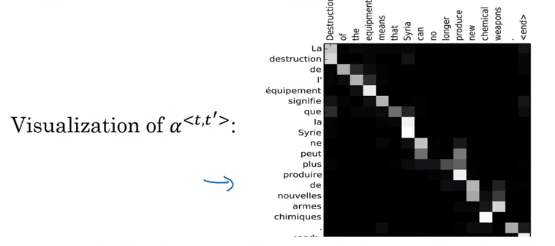
II-Speech recognition - Audio data
Speech recognition
seq2seq, where x = audio clip / spectrum gram, y=transcript
pre-DL era: phonemes (hand-engineered basic unit of sound) → no longer necessary with end-to-end learning on large dataset.
Dataset: 300~3000 hours
CTC cost : "Connectionist temporal classification".
Pb in speech recogintion with many-to-many RNN: number of input timesteps are much longer than output.
→ blank and repeated characters are considered correct (collapse repeated characters afterwards)

Trigger Word Detection
Train with an RNN.
Data: audio clips
→ set label 1 right after the trigger word.
pb: unbalanced dataset (a lot of 0s) → label = 1 for several timesteps after trigger word.
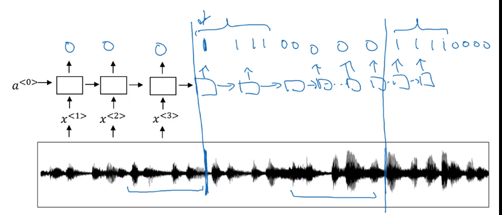
Conclusion and thank you
Deep learning is a super power.
Part 16 of series «Andrew Ng Deep Learning MOOC»：
- [Neural Networks and Deep Learning] week1. Introduction to deep learning
- [Neural Networks and Deep Learning] week2. Neural Networks Basics
- [Neural Networks and Deep Learning] week3. Shallow Neural Network
- [Neural Networks and Deep Learning] week4. Deep Neural Network
- [Improving Deep Neural Networks] week1. Practical aspects of Deep Learning
- [Improving Deep Neural Networks] week2. Optimization algorithms
- [Improving Deep Neural Networks] week3. Hyperparameter tuning, Batch Normalization and Programming Frameworks
- [Structuring Machine Learning Projects] week1. ML Strategy (1)
- [Structuring Machine Learning Projects] week2. ML Strategy (2)
- [Convolutional Neural Networks] week1. Foundations of Convolutional Neural Networks
- [Convolutional Neural Networks] week2. Deep convolutional models: case studies
- [Convolutional Neural Networks] week3. Object detection
- [Convolutional Neural Networks] week4. Special applications: Face recognition & Neural style transfer
- [Sequential Models] week1. Recurrent Neural Networks
- [Sequential Models] week2. Natural Language Processing & Word Embeddings
- [Sequential Models] week3. Sequence models & Attention mechanism
Disqus 留言